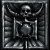
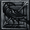
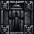
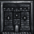
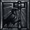
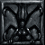

| |
恶魔洞穴 | 修女的埋骨之地 | 凯恩的搜寻 | 遗忘之塔 | 交易的工具 | 屠杀的修女
 |
邪恶洞穴
阿卡拉手下的浪人侦察兵发现了在营地附近有个怪物聚居的阴暗洞穴. 阿卡拉担心它们会对营地进行反扑. 你必须消灭洞穴中的所有怪物, 包括那些头目和暗金怪物.
任务奖励 1 点技能点数.
提示: 在鲜血荒地寻找邪恶洞穴.
任务给予: 与 阿卡拉 对话接到任务:
"在荒地中有一个极度邪恶的地方. 卡夏的萝格斥候已经告诉我们那个洞穴附近到处都是影子般的生物. 以及从坟墓中爬出来的怪物.
我害怕这些生物会群聚并攻击我们的营地. 如果你真的要帮助我们, 找到这个黑暗的迷宫并摧毁所有邪恶的怪物.
愿伟大之眼眷顾你们. "
接到任务后各 NPC 提示如下:
阿卡拉: "在这个可怕的地方, 我加派出去的斥候都死在路上. 我们不能再负担任何损失了, 如果你选择进入邪恶的洞窟, 你必须独自前往."
恰西: "这些从洞穴而来的怪物开始在乡村四处游荡, 你最好出去时多加小心." ; "你看来像是个光荣的战士. 我希望你可以帮助我们."
基得: "你拥有勇敢的灵魂! 我很快就会启动我的圣杖, 刺入最污秽、像红宝石般的娼妓体内, 然后踢进这个洞穴之中."
卡夏: "这个洞穴中的恶魔宣告我们之前最好的弓箭手都为他们效力. 我怀疑你会不会打赢!"
瓦瑞夫: " 不管是谁在找寻这个洞窟,都是在自寻死亡."
任务中途返回后, NPC 提示如下:
阿卡拉: "除非你杀死这个洞窟中的所有恶魔, 你的任务就不算完成."
恰西: "你还没有把洞窟清干净? 你是不是还需要什么东西?"
基得: " 恶魔们还在污染这个洞窟, 嗯? 我觉得你可能需要一把威力强大的新武器."
卡夏: "你最好能撑过这一关. 你的名声全靠它了."
瓦瑞夫: "犹豫不决的人... 都有一个好理由."
任务完成后, NPC 提示如下:
阿卡拉: "你已经清除了洞窟中的邪恶, 也赢得了我的信任, 并回复了我对人类的信心. 你的报酬是自行选择一项全新的技能."
恰西: "你真是英勇而技巧精湛的人... 阿卡拉很担心你们."
基得: "我只能说, 最好的恶魔就是死恶魔. 对了, 你有没有在那个洞窟中找到愿意出售的东西?"
卡夏: "嗯. 我对你能够完成这项考验十分惊讶, 外地人. 去找阿卡拉, 她可能有些奖赏."
瓦瑞夫: "…那些东西如果没能杀了你, 就会让你更加强壮." |
 |
修女埋骨之地
阿卡拉手下的浪人在修道院墓地附近发现了新的情况. 血鸟, 以前浪人的一个头领, 在崔斯特瑞姆与暗黑破坏神的战争中投靠了安达利尔. 她能将墓地里的浪人战士尸体召唤为僵尸. 你必须帮助浪人干掉她!
任务奖励 一个免费的浪人佣兵, 并且可以雇佣浪人弓箭手.
提示: 可以在冰冷之原寻找到埋骨之地的道路.
任务给予:
与 卡夏 对话接到任务:
"我的萝格斥候刚刚回报, 在僧院的埋骨之地中发生了令人痛恨的事情!
很显然的, 安达利尔并不只是打算控制我们所有还活着的人. 血鸟, 一位之前在崔斯特瑞姆对抗暗黑破坏神, 而埋骨于地下的菁英, 现在是个安达利尔第一个想要利用的人选.
现在, 你会发现她正在僧院的墓地, 试图让所有的死人再度以僵尸的模样出现!
我们不能容忍这项污秽的事情! 如果你真的是我们的盟友, 你必须帮我摧毁她."
接到任务后各 NPC 提示如下:
阿卡拉: "血鸟曾经在崔斯特瑞姆地下的墓地中, 英勇的与暗黑破坏神对战… 之后她就不再和以前一样了. 现在很明显的, 她回来之后就受到邪恶的影响."
恰西: "血鸟曾经是萝格的领导者, 是曾经在崔斯特瑞姆对抗暗黑破坏神的英雄."
基得: "我很抱歉… 不死的生物很难谈生意. 我严守着不拿回扣的政策."
卡夏: "死亡并不会减低血鸟的战斗技能, 如果说有任何变化的话, 她只会变得更致命."
瓦瑞夫: "嗯… 要怎么杀死一些已经死掉的人?"
任务中途返回后, NPC 提示如下:
阿卡拉: "如果你无法杀死血鸟, 恐怕我们的修道会就再也不存在了."
恰西: "即使在安达利尔突袭我们的时候, 阿卡拉还是觉得有些东西不对劲. 她害怕血鸟受到某些深藏在崔斯特瑞姆底下的邪恶所影响. 我真希望当时我们能够做些事情..."
基得: " 我怀疑那个爱说三倒四的人, 梅拉, 是不是在那堆不死生物之中? 噢, 她可以恶意中伤所有人."
卡夏: " 你只要慢一步, 就有另一个不死的修女加入血鸟的军队中."
瓦瑞夫: "当死人回头猎杀活人, 就是最可怕而且无法理解的时候."
任务完成后, NPC 提示如下:
阿卡拉: "安达利尔必须为她的罪行付出代价!"
恰西: "卡夏希望能够以你杀死血鸟的事迹来给你一些奖赏. 我也十分感谢你, 即使血鸟曾经是我的好朋友."
基得: "有些女孩在我们刚刚来此时并没有那么友善."
卡夏: "我几乎不敢相信你杀死了血鸟! 虽然她曾经是我最亲密的朋友, 我仍然祈祷她饱受刑罚的灵魂被永远的放逐. 你赢得了我的尊敬, 冒险者.. . 而且也得到所有萝格的忠诚. 我已经把好几位最好的战士派来供你驱策."
瓦瑞夫: "你做得很好, 陌生人. 我希望你所有的努力都有代价." |
 |
凯恩的搜寻
阿卡拉告诉你现在你将要面对以前从未遇到的怪物, 你必须去学习神秘的历史和古老的知识, 只有迪卡.凯恩可以帮助你. 你必须到崔斯特瑞姆寻找他. 首先在罗格营地中任务将会让你去寻找艾尼弗斯之树, 找到写有神秘符文的卷轴. 将它带给阿卡拉. 一但她将上面的文字翻译完成, 就可以告诉你如何解开凯恩之石顺序的秘密.
任务奖励 凯恩开始免费鉴定物品; 戒指的 Ilvl: 普通难度 7 (魔法戒指), 噩梦难度 28 (杰出戒指), 地狱难度 49 (杰出戒指). 戒指的 Ilvl 是设置好的, 并不会因为角色等级而改变; 找阿卡拉获得罗格营地的信任, 该场景 NPC 物品的售价减低到 90% (注:对赌博无效, Ugc, 边缘的减价是在 90% 的基础上减不是 -(X%+10%)).
提示: 首先在黑暗森林找到艾尼弗斯之树 (通过地底通道), 在石块旷野寻找凯恩之石.
任务给予:
与 阿卡拉 对话接到任务:
"很明显的, 我们面对着难以理解的邪恶力量, 更不用说是要战斗.
现在只有一位赫拉迪姆的法师, 精通于各种神秘的历史和知识, 只有他能给我们一些建议... 他的名字是迪卡.凯恩.
你必须前往崔斯特瑞姆并找到他, 我的朋友. 我祈祷他仍然活着."
接到任务后各 NPC 提示如下:
阿卡拉: "步行前往崔斯特瑞姆太慢了... 就算你们走得到, 凯恩也可能已经死了. 不过, 有一个魔法的传送点可以把你们瞬间送到那个地方. 要开启它, 必须有一个人站在石冢之中, 并以特定的顺序触动它们. 你可以在艾尼弗斯树木的外皮上面找到这些符号的顺序. 你必须找到这棵艾尼弗斯圣树, 并把它的外皮带回来. 我可以帮你们解读这些符号, 打开石阵的神秘力量."
恰西: "如果你能带回艾尼弗斯的外皮, 阿卡拉就可以告诉你如何到达崔斯特瑞姆."
基得: "我宁愿在我的啤酒桶中撒尿也不愿意前往崔斯特瑞姆!"
卡夏: "艾尼弗斯的外皮上面写着一些神秘的符号. 阿卡拉可以翻译它们.... 让我们有机会复仇!"
瓦瑞夫: "数个月前, 我在崔斯特瑞姆碰上一些生还者. 他们说凯恩已经几乎接近半疯, 而且无法分辨现实和幻想."
拿卷轴中途返回后, NPC 提示如下:
阿卡拉: "你不去崔斯特瑞姆怎么可能找到凯恩? 找到艾尼弗斯的外皮, 就是你踏上旅程的第一步."
恰西: "没有艾尼弗斯的外皮, 我们就无法找到凯恩."
基得: "怕剥错了树木的外皮, 呃? 你会找到它的, 只要继续努力就行了."
卡夏: "艾尼弗斯之树很难找, 但是你一看到它就知道了."
瓦瑞夫: "找寻却无所见的人们, 必须从他的心中听取更多的声音… 或是更努力点!"
拿到卷轴后, NPC 提示如下:
阿卡拉: " 啊, 很好. 我已经把这些符号翻译好, 写在这个卷轴上. 你必须找到石冢, 并按照我写下的顺序来触碰石块."
恰西: "把它拿给阿卡拉. 只有她能看得懂."
基得: "喂, 朋友… 我的确愿意和一些奇奇怪怪的物品打交道, 但是我不打算卖树皮, 行吗?"
卡夏: "靠着这个卷轴, 你可以打开通往崔斯特瑞姆的传送点. 只有阿卡拉可以解读它的逻辑."
瓦瑞夫: "这看起来像是胡言乱语. 阿卡拉可能知道它在写什么."
任务中途返回后, NPC 提示如下:
阿卡拉: "如果他还活着, 迪卡.凯恩可能处于极度的危险下! 你必须快点前往崔斯特瑞姆, 免得一切都完了!"
恰西: "我听说崔斯特瑞姆是个废墟! 没能找到凯恩的话, 恐怕一切都完了."
基得: "我听说崔斯特瑞姆现在像是一块草地… 一场野蛮人婚礼后的草地! 我会在这个地方等你们带着光荣回来."
卡夏: "迪卡. 凯恩拥有我们面对邪恶的决定性知识. 你必须找到他!"
瓦瑞夫: "要前往崔斯特瑞姆实在太危险了. 直到路上清乾净, 否则我不会离开这里!
"
任务完成后, NPC 提示如下:
阿卡拉: "你冒了你们的生命危险去援救凯恩. 光为这点我就十分感谢你. 我们必须马上安顿他."
恰西: "因为你带回了迪卡.凯恩, 阿卡拉希望奖励你的勇气."
迪卡.凯恩: " …我十分感谢你, 朋友, 在紧急时出现援助我. "
"很遗憾的, 对于崔斯特瑞姆被毁灭我什么事都做不到, 它碰上了我们心中最深处的恐惧-暗黑破坏神, 恐怖之王, 再一次回到这个世界上肆虐!
如你所知, 在一段时间之前暗黑破坏神在崔斯特瑞姆深处被诛杀. 而且当我们的英雄在城镇底下的迷宫中露出胜利的微笑时, 我们也在城镇中举行了数天的大型庆典.
不过, 过了数星期之后, 我们的英雄变得越来越冷漠. 他和其他的镇民保持距离, 而且看来踏入了黑暗、沉思的沮丧之中. 我以为那只是他无法把受过的痛苦抛诸脑后所造成的.
随着一天天过去, 英雄所受到的痛苦就更深. 我记得他好几次在黑夜中醒来-大声狂吼-而且每次都提到"东方".
有一天, 他就离开了. 很快的, 崔斯特瑞姆就被一群邪恶的恶魔所攻击; 很多人都死了, 而且恶魔们把他们放在受诅咒的笼牢中等待死亡.
我相信现在崔斯特瑞姆的英雄, 就是那个黑暗的流浪者, 在僧院沦入恶魔手中之前所经过的那个人.
我感受到更糟的状况, 朋友... 我怕暗黑破坏神已经附在那个英雄的身上, 而没有死亡. 如果这是真的, 暗黑破坏神将拥有比以前更为强大的力量.
你必须阻止他, 否则一切就统统结束了."
"就当做我对你的感谢吧! 我将免费为你鉴定物品."
"
噢…神佑萝格! 他们终于把我从这个受诅咒的地方救出来了!"
基得: "啊, 凯恩回来了... 另一个顾客. 自从那个对爱情饥饿的女子掉头发之后, 我很久都没有这么高兴了."
卡夏: "你又一次让我倍感惊讶, 外地人. 修女会对你能把凯恩找回来致上无限的感谢. 我相信阿卡拉有些话想告诉你."
瓦瑞夫: "只有最勇敢的冒险者能够带回迪卡.凯恩. 阿卡拉将因为你的英武而好好的奖励你. |
 |
遗忘之塔
城堡之书讲述了一个伯爵夫人被活活烧死的故事. 在这片荒凉的土地上, 很多城堡都已经倒塌了, 只有伯爵夫人的城堡依然耸立着. 传说里面有无数的金银财宝, 但也有人说这些传说都是虚构的.
在噩梦和地狱难度中, 遗忘之塔的底下将变的更大.
任务奖励 装有魔法物品的箱子.
提示: 在黑色荒地和石块旷野中寻找任务相关线索.
任务给予:
阅读 发霉的古书:
"...所以它是有意图去找女伯爵的, 那个曾经想用处女的鲜血来返老还童, 被活埋的女子…而且她的城堡在各种残暴的行为下, 很快的崩塌成为一个废墟. 一个人迹罕至的高塔竖立在诸神遗忘的荒野上面, 像是某种邪恶的纪念碑.
女伯爵的财富相信是由神职人员所瓜分, 虽然有些财富仍然没有被找出来, 仍然埋藏在腐朽的骷髅身边, 这些是唯一目睹城堡中不人道行为的无声见证者."
接到任务后各 NPC 提示如下:
阿卡拉: "在那边的危险并不只是结构上的问题, 当里面成为悲惨的状况时, 很多人只能在恶劣的气氛下屈服."
恰西: "这个陈旧的高塔和外面一样破旧. 我听说有些修女在楼梯井倒塌在他们的身上时, 有些十分恐怖的后果."
迪卡.凯恩: "那个塔就是危险地点的地标. 有一首史诗般的诗歌描述它...一个人能够承受多少悲伤, 可以在这个地方得到全面的测试."
基得: "你在这个地方能找到的只有害虫, 没有财富."
卡夏: "这本书中提到了财宝. 还有, 我们能找到的有死亡、精神错乱及失望."
瓦瑞夫: "宝藏的传说和其他种类的传说并没有什么不同. 它们一样有些错误的说法和保证, 让那些人不自觉的想要知道更多."
任务中途返回后, NPC 提示如下:
阿卡拉: "我已经把高塔所知的一切统统告诉你了."
恰西: "你还不打算放弃, 是不是?"
迪卡.凯恩: "快进快出是我能够给你的建议."
基得: "猜猜看! 我的屁股已经和你一样被烧焦了. 每次我想坐下, 它就会让我痛不欲生."
卡夏: "你突然失去了对财富的胃口?"
瓦瑞夫: "一个空空的口袋, 总比一片墓碑来得好."
任务完成后, NPC 提示如下:
阿卡拉: "我以为高塔中的财宝故事和谎言并没有什么不同. 我很高兴你找到一些埋藏在死亡陷阱中的东西, 我们的姊妹们一样有这种好运."
恰西: "这些财富可以在漫长的旅途中发挥很好的用途."
迪卡.凯恩: "干得好, 我的朋友. 勇气和机会合而为一, 为你创造出炼金术师般的魔法力量."
基得: "瓦瑞夫的建议和尸气一样; 它会在空气中放出臭气, 然后就消失无踪."
卡夏: "你的奖赏十分丰富, 对我们而言, 这个高塔不过是隐约出现在这个长久以来, 被遗忘墓场的巨大墓碑罢了."
瓦瑞夫: "记住, 财富的虚幻和易逝与云彩一样快速. 别管基得, 不是每一个嘲讽者都是秃头." |
 |
交易的工具
当铁匠恰西从修道院逃出来的时候不小心遗忘了她的 赫拉迪克.马勒斯, 这是一个有非凡魔力的锻造锤. 如果你能帮她找回来, 她就会使用其中的魔力使你的武器变的更强. 这个宝物被怪物史密斯严密的看守着.
任务奖励 注入一件物品, 由普通物品变为杰出物品.
多人奖励 所有玩家完成后都会得到奖励.
提示: 在军营中仔细寻找. 谨慎选择你想要注入的装备.
注意: 你需要最少等级 8 才可以完成这个任务.
任务给予:
与 恰西 对话接到任务:
"当我从僧院逃出来时, 我留下了赫拉迪克.马勒斯, 那是我强化过的铁匠用铁锤. 如果你能够帮我把它找回来, 我可以运用它的法力来加强你装备的力量."
接到任务后各 NPC 提示如下:
阿卡拉: "要取回赫拉迪克.马勒斯并不是完全没有危险的. 我们的僧院中充满了地狱而来的贪婪野兽, 你最好小心点, 朋友."
恰西: "就算是熟知僧院的人也可能在里面迷失. 到那边之后多加小心."
迪卡.凯恩: "这个铁锤是由古代赫拉迪克的法师, 在罪恶战争中铸造并用法力强化的产物. 当他们的教会消散之后, 这个物品就被修女会所持有, 用来固守通往东方的道路."
基得: "恰西除了这把赫拉迪克.马勒斯之外, 她不会再谈到其他事情. 你可以和她谈谈, 让我的耳朵休息一下. 只管快点找到它, 并且马上带回来."
"我可以给你流浪中的阳具图像, 但是对你可能没用."
卡夏: "如果恰西使用那些低级的铁锤, 简直是在浪费她的天份和时间! 如果她手中有赫拉迪克.马勒斯, 她可以让金属歌唱并为你量身打造出无法击穿的甲胄, 如同伟大之眼一样!"
瓦瑞夫: "就像弓箭手需要弓和箭、或是西洋棋子要走在方格中, 恰西需要赫拉迪克.马勒斯, 才能开始做生意."
任务中途返回后, NPC 提示如下:
阿卡拉: "如果你无法完成这个任务, 你要怎样才能对抗面前更邪恶的力量?"
恰西: "马勒斯具有赫拉迪克古代的伟大力量, 请把它带回来."
迪卡.凯恩: "你目前还无法了解马勒斯, 不过, 在军营中好好的搜寻吧…那是萝格们安置熔炉的地方."
基得: "我听说你因为我们没有带出马勒斯而怀恨在心."
卡夏: "和对抗安达利尔, 你不能光靠你那一层皮肤和强烈的意志. 你需要利用强化铁锤所做出来的甲胄和武器."
瓦瑞夫: "有什么更好的机会来彰显你的英勇?"
任务完成后, NPC 提示如下:
阿卡拉: "干得好, 朋友. 但是记住, 你必须从僧院取回赫拉迪克.马勒斯, 才能把它送回来."
恰西: "噢! 你能把赫拉迪克.马勒斯送回来实在太棒了! 我现在就可以把你的一项物品灌入魔法的力量."
迪卡.凯恩: "灌注在马勒斯之中的魔法力量几乎无法预测, 但都是善良的力量."
基得: "我猜现在要收回一些我在你们背后的风言风语已经太慢了."
卡夏: "现在我们己经取回赫拉迪克.马勒斯了, 我们应该利用它蕴藏的力量, 重创散布在大地上的邪恶."
瓦瑞夫: "我很高兴你能把铁锤送回来." |
 |
屠杀的修女
现在是面对恶魔女王安达利尔的时候了, 她令浪人姐妹集体堕落并玷污了古老的修道院. 在她将修道院变成地狱前哨之前, 你必须杀死她, 并恢复通往东方的道路.
任务奖励 进入第二场景.
提示: 在地下墓穴第四层里寻找她.
任务给予:
与 迪卡.凯恩 对话接到任务:
"现在我们可以肯定的是我们的敌人-安达利尔-已经控制了萝格的修女会, 并污染了先祖传下来的僧院. 这对我们而言并不是一个好兆头, 朋友.
古代的赫拉迪克文字, 记载了安达利尔曾经与另一个较弱的邪魔将三个罪恶之源-暗黑破坏神、墨菲斯托和巴尔-从地狱送入了我们的世界之中. 在这个地方, 他们在被囚禁入灵魂之石之前, 诅咒人类会受到无尽的苦痛.
安达利尔出现在此地, 可能表示地狱中的力量, 已经再一次团结在暗黑破坏神以及他兄弟们背后. 如果这是真的, 恐怕我们都有危险.
你必须在僧院变成地狱永久的前哨站之前把她宰了, 否则通往东方的道路将永远中断."
接到任务后各 NPC 提示如下:
阿卡拉: "安达利尔已经污辱了我们神圣的心灵. 她一定不能再继续为暗黑破坏神做事. 摧毁她! 她必须为伤害我们的修道会付出代价, 才能补偿我们的损失!"
恰西: "把安达利尔送回她的老家-地狱!"
迪卡.凯恩: "暗黑破坏神前往东方去完成一些邪恶的目的, 而唯一往东方的通道就是穿过僧院的门. 很明显的, 就是暗黑破坏神召唤了安达利尔来阻挡任何可能出现的阻碍. 对她而言, 安达利尔希望能赢得暗黑破坏神的恩宠…较弱的恶魔会不断的期望获得邪恶阶级中较高的权力和地位!"
基得: "你打算追捕安达利尔?...我的马车上其中一个车轮需要修复. 如果你想找我, 我会在马车下面."
卡夏: "我可以想出上千条方式来杀死安达利尔, 而你只需要选择一条就行了."
瓦瑞夫: "绘图人告诉我们, 二个地点间最近的路程是一条线. 而我们前往东方的一直线上, 必须穿过安达利尔的堡垒, 也就是僧院."
任务中途返回后, NPC 提示如下:
阿卡拉: "你已经为了帮助我们而完成许多事情, 但是我可以感受到这只是在增加安达利尔的暴怒. 除非我们统统死亡, 否则她是不会停止的. 你必须在她的大军取得优势之前, 先把安达利尔铲除掉."
恰西: "如果你是众望所归的英雄人物, 现在就是证明的时候了."
迪卡.凯恩: "很明显的, 安达利尔正在代表暗黑破坏神, 来预防任何人跟着他前往东方. 打倒她, 代表你可以继续你的追捕行动. 当安达利尔出现在燃烧的地狱时, 古代的知识仍然有其道理-她不会喜欢火焰的."
基得: "你是不是被恶魔女王阻住了去路? 我听说她非常美丽...如同在痛苦之中的少女."
卡夏: "迪卡.凯恩拥有一些与安达利尔十分重要的资讯."
瓦瑞夫: "我能不能提醒你一下, 只要僧院的路通了之后, 我的商队才会往东前进?"
任务完成后, NPC 提示如下:
阿卡拉: " 我们终于可以欢庆了! 我们欠你一些永远还不起的恩惠, 我只希望随着时间, 我们可以重建我们的修道会. 我们将永远的感激你, 我的朋友."
恰西: "你可能马上会前往东方…真高兴认识你. 如果你需要任何东西, 希望你会回来找我们."
迪卡.凯恩: " 这是个伟大的胜利, 但是面前还有更多的战斗在等着. 我会在你的旅程中与之为伴, 尽我可能的提供协助...记住…暗黑破坏神还是在外面游走, 在沙漠中找寻一些我们不知道的东西. 直到你们找到他正在搜寻的东西之前, 我很害怕这个恶梦永远不会结束."
基得: "我要在舞会中狂欢, 直到不醒人事!"
卡夏: "安达利尔的死亡, 将为我们每一个人带来全新的生活. 我们也会为死去的姊妹们而悲叹, 但是至少现在我们可以过自己的生活了. 我…可能误解了你, 外地人. 你是真正的英雄, 而且遵守神圣灵魂的信条, 将永远的激励我们修道会的后代. 再见…我的朋友.」
瓦瑞夫: "商队己经准备好了, 我们可以前往东方的鲁.高因了." |
|
|